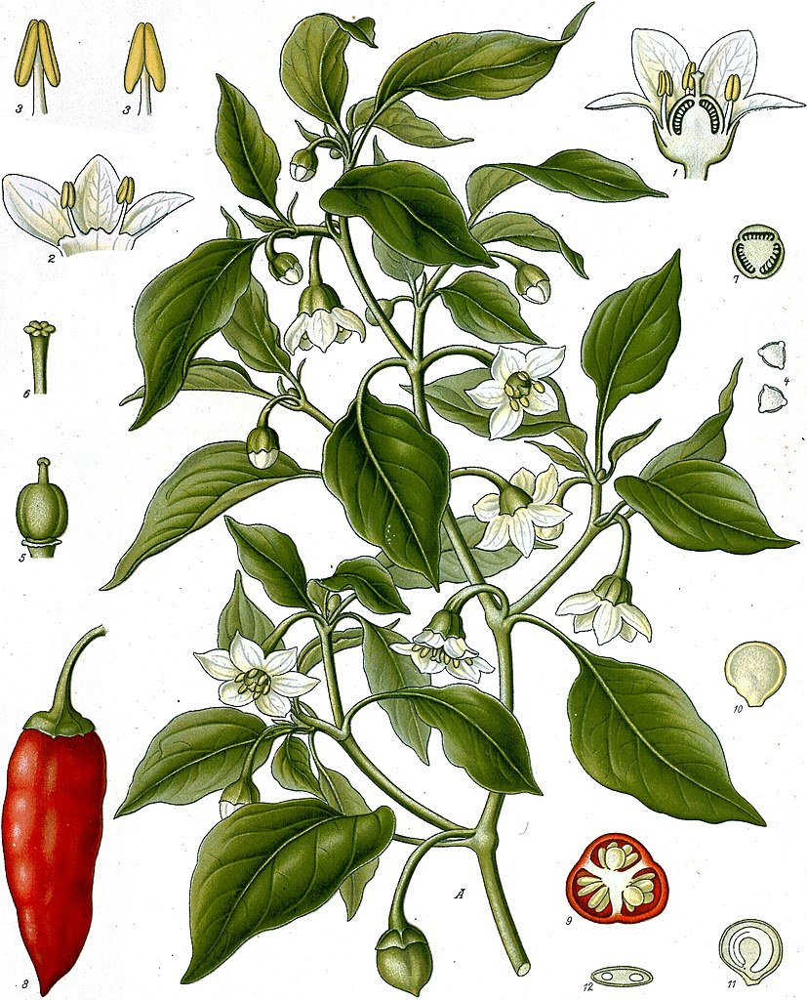
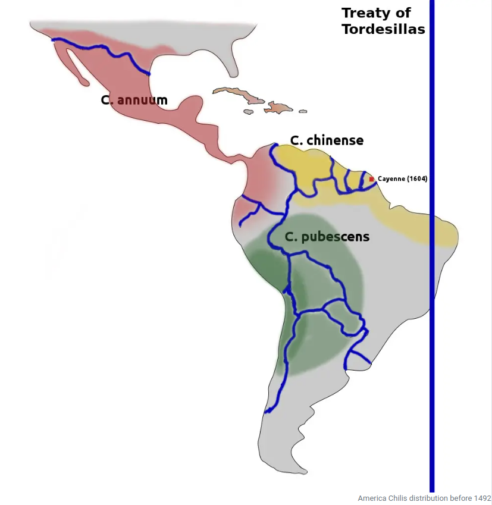
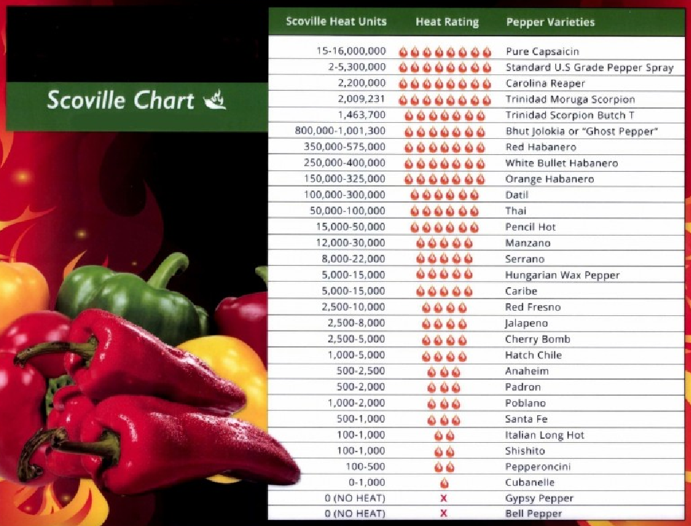
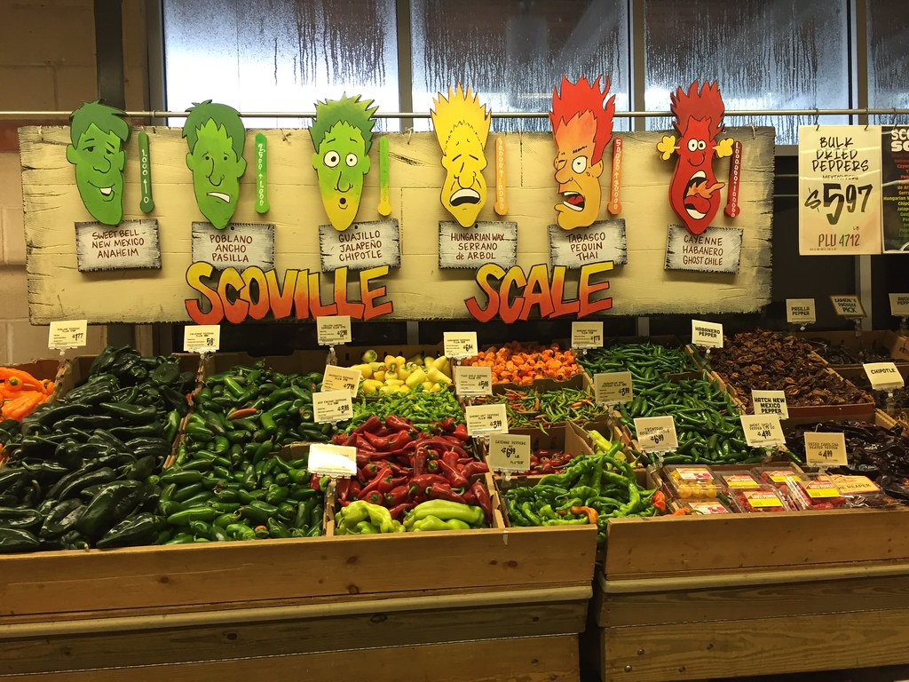
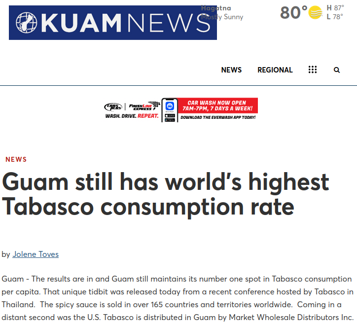
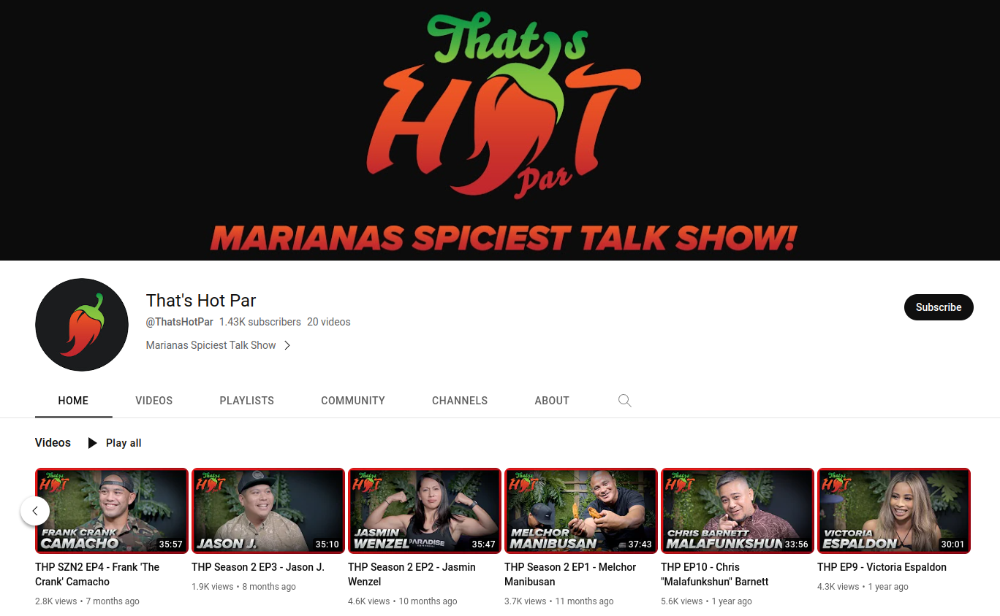
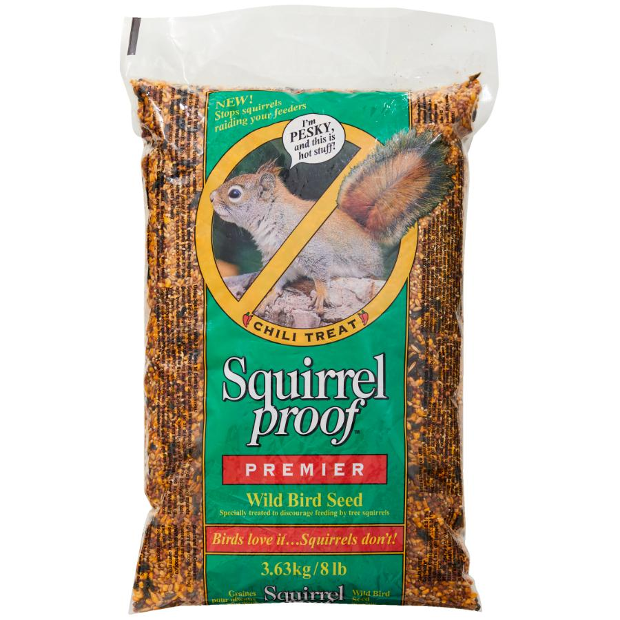
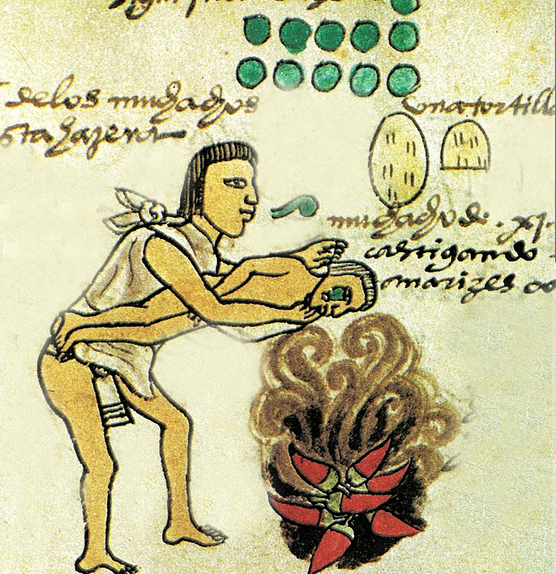
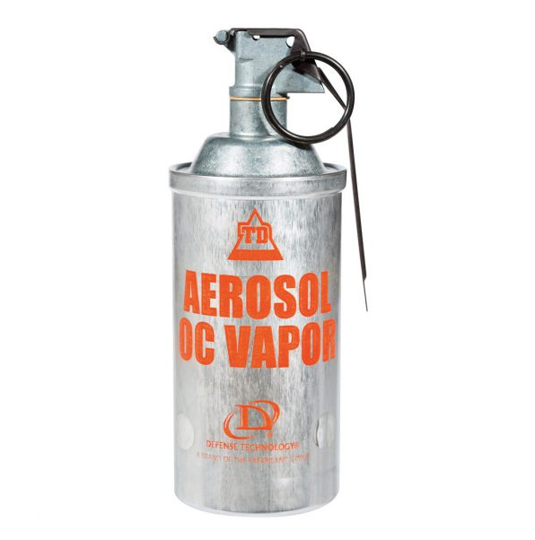
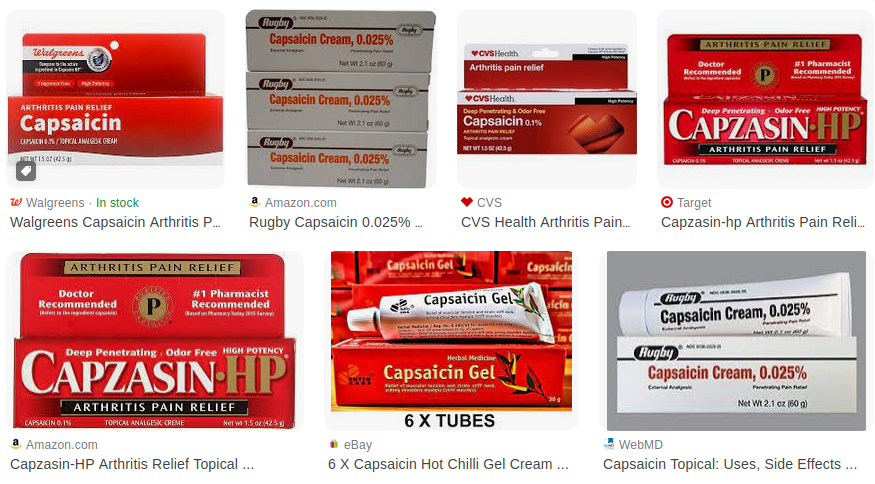

Interesting Facts About Chili Pepper Aubrey MoorePepper WorkshopUniversity of Guam
Please press S
Outline
Natural history of chili pepper
Human interactions with chili pepper
Nonfood uses of chili pepper
References
Natural history of chili pepper

Like many other plants, peppers use animals to solve transportation problems including seed dispersal. Pepper fruits "want to be eaten by animals" so that seeds will be widely dispersed. They even advertise their availability by turning red when ripe.
Birds are great dispersers for pepper seeds because they are swallowed whole. However, when mammals eat peppers, most of the seeds are crushed to death by molar teeth.
Through evolution pepper plants solved this problem by putting capsaicin in their fruits. Capsaicin is a powerful repellant for mammals. But birds do not have neural receptors to detect this chemical.
Human interactions with chili pepper

Chili pepper plants belong to the genus Capsicum which is native to the Americas.
The first indiginous people harvested wild fruit and started cultivation about 8,000 years ago.
This map shows the range of for Capsicum when Columbus arrived in 1492.
Columbus returned to Europe with Capsicum seeds. The original varieties were far too hot for the European pallete, but plant breeding successfully resulted in reducing capsaicin content. An extreme example is the bell pepper variety which contains very little capsaicin.
It is beleived that Capsicum was spread to Asia by Portuguese and Spanish traders following Magellan's circumnavigation of the earth in 1519-1522.
Chili pepper quickly became an essential ingredient in the cuisine of many countries including Italy, Thailand, and China.
Human interactions with chili pepper
Plant breeding has resulted in a huge range of varieties with varying hotness.

The intensity of the "heat" of chili peppers is commonly reported in Scoville heat units (SHU), invented by American pharmacist Wilbur Scoville in 1912. Historically, it was a measure of the dilution of an amount of chili extract added to sugar syrup before its heat becomes undetectable to a panel of tasters; the more it has to be diluted to be undetectable, the more powerful the variety, and therefore the higher the rating. The modern method is a quantitative analysis of SHU using high-performance liquid chromatography (HPLC) to directly measure the capsaicinoid content of a chili pepper variety. Pure capsaicin is a hydrophobic, colorless, odorless, and crystalline-to-waxy solid at room temperature, and measures 16,000,000 SHU.
Human interactions with chili pepper
Here's a nice store display of chili peppers ordered by Scoville heat units (SHU).

Human interactions with chili pepper
Guam has the highest per capita rate of Tabasco usage out of 163 countries.
"On average, each Chamorro consumes 4 ounces of Tabasco each year, which is more per capita than any other country! The mainland United States is a far-flung second place, with less than one ounce consumed per year by each American."
Craig Santos Perez, "Ode to Tabasco", the Lifted Brow Blog, Jan. 24, 2018.

Human interactions with chili pepper
Guam TV talk show: "That's Hot Par"

Nonfood uses of pepper
Capsaicin used as a pesticide

Pepper spray formulations containing capsaicin are used to repell mammalian pests such as dogs and bears. These formulations are registered as pesticides by the the US Environmental Protection Agency.
Chili peppers are used as repellents for elephants in India and Africa (See https://www.npr.org/templates/story/story.php?storyId=6173684test .
Capsaicin is added to seed in bird feeders to stop squirrels from stealing bird food. Squirrels are repelled but birds are unaffected.
Nonfood uses of pepper
Capsaicin weaponized in pepper spray and tear gas

Capsaicin was originally weaponized by Aztecs and Mayans thousands of years ago.
During war, they repelled attackers by burning large amounts of chilis to create acrid smoke.
According to Spanish historians, Atecs discliplined delinquent children by throwing dried chilis into a fire and holding them in the smoke.
Nonfood uses of pepper
Capsaicin weaponized in pepper spray and tear gas

More recently, OC pepper spray and OC gas, have been developed for personal protection and crowd control. OC is the acronym for oleoresin capsicum which is made by extracting compounds from dried chilis.
Nonfood uses of pepper
Medical uses

Capsaicin is used to help relieve a certain type of pain known as neuralgia (shooting or burning pain in the nerves). Capsaicin is also used to help relieve minor pain associated with rheumatoid arthritis or muscle sprains and strains. Capsaicin can be applied to the skin using creams or patches.
Nonfood uses of pepper
Medical uses